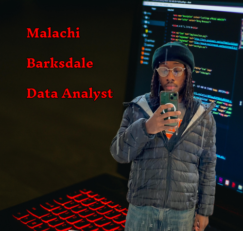

Malachi Barksdale
Undergraduate Research Assistant at Syracuse University
I am a sophomore at the iSchool studying Applied Data Analytics. I chose this major because I am interested in studying analytics related to finances and or politics. A summary of my skills includes python, SQL, and financial accounting. Outside of school work I am a research assistant for Professor Banks in the LinkLab. In my personal life, I am a huge fan of video games and movies. I spend most of my free time doing either one. My favorite movie would be War of the Planet of the Apes, my favorite show would be The Sopranos, and my favorite video game would be Red Dead Redemption 2.
My career aspirations:- Political Analyst
- Financial Analyst
- Successful Twitch Streamer